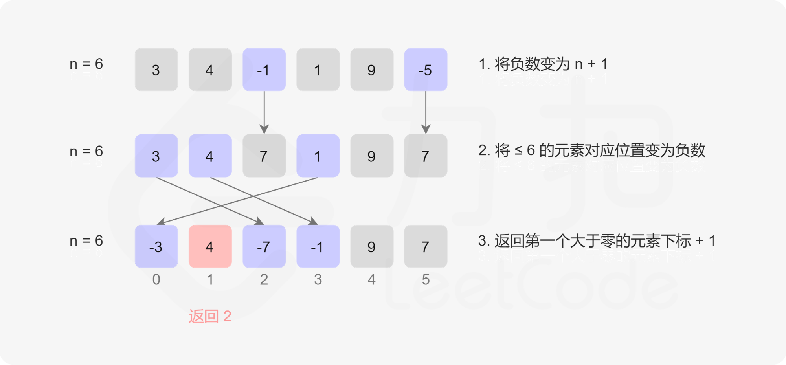

数组/字符串
3.无重复字符的最长子串
难度：⭐️⭐️
给定一个字符串 s ，请你找出其中不含有重复字符的 最长子串 的长度。
示例 1:
输入: s = "abcabcbb"
输出: 3
解释: 因为无重复字符的最长子串是 "abc"，所以其长度为 3。注意 "bca" 和 "cab" 也是正确答案。
示例 2:
输入: s = "bbbbb"
输出: 1
解释: 因为无重复字符的最长子串是 "b"，所以其长度为 1。
示例 3:
输入: s = "pwwkew"
输出: 3
解释: 因为无重复字符的最长子串是 "wke"，所以其长度为 3。 请注意，你的答案必须是 子串 的长度，"pwke" 是一个子序列，不是子串。
提示：
- 0 <= s.length <= 105
- s 由英文字母、数字、符号和空格组成
解法一 滑动窗口 + 哈希表
使用左右两个指针记录滑动窗口的起始和终止位置，用一个HashSet记录字符是否出现过，出现过，左指针右移直到该字符移动到窗口外，否则右指针一直右移，同时计算最大子串的长度。
优化 用HashMap记录每个字符第一次出现时的下标，遇到出现过的字符串时，直接更新左指针的位置。
滑动窗口
public int lengthOfLongestSubstring(String s) {
Set<Character> set = new HashSet<>();
int max = 0;
int start = 0;
int end = 0;
for (int i = 0; i < s.length(); i++) {
char c = s.charAt(i);
if (set.contains(c)) {
max = Math.max(max, end - start);
while (set.contains(c)) {
set.remove(s.charAt(start++));
}
}
set.add(c);
end++;
}
max = Math.max(max, end - start);
return max;
}
滑动窗口（优化版）
public int lengthOfLongestSubstring(String s) {
Map<Character, Integer> map = new HashMap<>();
int max = 0;
int start = 0;
int end = 0;
for (int i = 0; i < s.length(); i++) {
char c = s.charAt(i);
if (map.containsKey(c)) {
start = Math.max(map.get(c) + 1, start);
}
end = i;
map.put(c, i);
max = Math.max(max, end - start + 1);
}
return max;
}
15. 三数之和
难度：⭐️⭐️⭐️
给你一个整数数组 nums ，判断是否存在三元组 [nums[i], nums[j], nums[k]] 满足 i != j、i != k 且 j != k ，同时还满足 nums[i] + nums[j] + nums[k] == 0 。请你返回所有和为 0 且不重复的三元组。
注意：答案中不可以包含重复的三元组。
提示：
- 3 <= nums.length <= 3000
- -105 <= nums[i] <= 105
解法一：双指针
先排序，从头遍历，跳过重复的元素，从第i个位置开始，将区间[i+1, nums.length - 1]内的问题转换成有序数组的两数之和问题。 注意去重时，要在找到满足条件的数之后立刻去重，左右跳过相同的数，否则会超时。
时间复杂度：O(n2)
空间复杂度：O(logn)
双指针
public List<List<Integer>> threeSum(int[] nums) {
Arrays.sort(nums);
List<List<Integer>> ans = new ArrayList<>();
for (int i = 0; i < nums.length - 2; i++) {
if (nums[i] > 0) continue;
if (i > 0 && nums[i] == nums[i - 1]) continue;
int left = i + 1;
int right = nums.length - 1;
while (left < right) {
int sum = nums[left] + nums[right] + nums[i];
if (sum < 0) {
left++;
} else if (sum > 0) {
right--;
} else {
List<Integer> arr = new ArrayList<>();
arr.add(nums[i]);
arr.add(nums[left]);
arr.add(nums[right]);
ans.add(arr);
// 去重
do { left++ } while (left < right && nums[left] == nums[left - 1]);
do { right-- } while (left < right && nums[right] == nums[right + 1]);
}
}
}
return ans;
}
```
</details>
## [27.移除数组中指定元素](https://leetcode.cn/problems/remove-element/description/)
难度：⭐️
给你一个数组 `nums` 和一个值 `val`，你需要 原地 移除所有数值等于 `val` 的元素。元素的顺序可能发生改变。然后返回 `nums` 中与 `val` 不同的元素的数量。
**解法一** 暴力解法
[不推荐] 直接2层循环，遇到重复的元素，把后面的元素都覆盖到前面。
<details>
<summary>暴力遍历</summary>
```java
public int removeElement(int[] nums, int val) {
int k = 0;
for (int i = 0; i < nums.length - k;) {
if (nums[i] != val) {
i++;
continue;
}
k++;
for (int j = i; j < nums.length - 1; j++) {
nums[j] = nums[j + 1];
}
}
return nums.length - k;
}
```
</details>
**解法二** 快慢指针
相等元素移动快指针，不同元素直接赋值。
<details>
<summary>快慢指针</summary>
```java
public int removeElement(int[] nums, int val) {
int slow = 0;
int fast = 0;
int k = 0;
while (fast < nums.length) {
if (nums[fast] == val) {
fast++;
} else {
nums[slow] = nums[fast];
slow++;
fast++;
k++;
}
}
return k;
}
```
</details>
**解法三** 双指针
没有要求有序，可以使用左右指针，元素相等时，将右指针上元素赋值给当前位置，右指针左移，直到两个指针相遇。
<details>
<summary>左右双指针</summary>
```java
public int removeElement(int[] nums, int val) {
int left = 0;
int right = nums.length;
int k = 0;
while (left < right) {
if (nums[left] == val) {
nums[left] = nums[right - 1];
right--;
} else {
k++;
left++;
}
}
return k;
}
```
</details>
## [33. 搜索旋转排序数组](https://leetcode.cn/problems/search-in-rotated-sorted-array)
难度：⭐️⭐️⭐️
整数数组 `nums` 按升序排列，数组中的值 **互不相同** 。
在传递给函数之前，`nums` 在预先未知的某个下标 k（0 <= k < nums.length）上进行了 向左旋转，使数组变为 `[nums[k], nums[k+1], ..., nums[n-1], nums[0], nums[1], ..., nums[k-1]]`（下标 从 0 开始 计数）。例如， `[0,1,2,4,5,6,7]` 下标 `3` 上向左旋转后可能变为 `[4,5,6,7,0,1,2]` 。
给你 **旋转后** 的数组 `nums` 和一个整数 `target` ，如果 `nums` 中存在这个目标值 `target` ，则返回它的下标，否则返回 `-1` 。
你必须设计一个时间复杂度为 `O(log n)` 的算法解决此问题。
**示例 1：**
> 输入：nums = [4,5,6,7,0,1,2], target = 0
> 输出：4
**示例 2：**
> 输入：nums = [4,5,6,7,0,1,2], target = 3
> 输出：-1
**示例 3：**
> 输入：nums = [1], target = 0
> 输出：-1
**提示：**
- 1 <= nums.length <= 5000
- -10<sup>4</sup> <= nums[i] <= 10<sup>4</sup>
- nums 中的每个值都 独一无二
- 题目数据保证 nums 在预先未知的某个下标上进行了旋转
- -10<sup>4</sup> <= target <= 10<sup>4</sup>
**解法一**：二分查找
二分时先找到区间的中点，左侧和右侧一个有一个是有序的，如果 `target` 落在了有序区间内，直接在有序区间内查找，如果不在，则移到非有序区间内继续二分。
<details>
<summary>二分查找</summary>
```java
public int search(int[] nums, int target) {
int left = 0;
int right = nums.length - 1;
while (left <= right) {
int mid = left + (right - left) / 2;
if (nums[mid] == target) {
return mid;
}
if (nums[left] <= nums[mid]) {
// 左侧有序
if (nums[left] <= target && target < nums[mid]) {
right = mid - 1;
} else {
left = mid + 1;
}
} else {
if (nums[mid] < target && target <= nums[right]) {
left = mid + 1;
} else {
right = mid - 1;
}
}
}
return -1;
}
41.缺失的第一个正数
难度：难度：⭐️⭐️⭐️⭐️
给你一个未排序的整数数组 nums ，请你找出其中没有出现的最小的正整数。
请你实现时间复杂度为 O(n) 并且只使用常数级别额外空间的解决方案。
解法一 哈希表
空间复杂度为O(n)，用哈希表将数组中的元素存起来。for循环，当哈希表中不存在该元素时，下标的n+1位置就是缺失的第一个正数，如果循环完了每个元素都在哈希表中，结果就是数组的长度加1.
哈希表(空间复杂度不满足题目要求)
解法二 原地哈希

原地哈希
public int firstMissingPositive(int[] nums) {
int n = nums.length;
// 把所有的负数都变成正数
for (int i = 0; i < n; i++) {
if (nums[i] <= 0) {
nums[i] = 1 + n;
}
}
// 对于小于n的数，将nums[n]设置成负数，那么没有设置的数字，就是缺失的正数
// 相当于变相建立了一个哈希表 <num, index>
for (int i = 0; i < n; i++) {
int num = Math.abs(nums[i]);
if (num <= n) {
nums[num - 1] = -Math.abs(nums[num - 1]);
}
}
// 遍历数组，找到第一个正数，下标即为缺失的正数
for (int i = 0; i < n; i++) {
if (nums[i] > 0) {
return i + 1;
}
}
return n + 1;
}
76. 最小覆盖子串
难度：⭐️⭐️⭐️⭐️
给你一个字符串 s 、一个字符串 t 。返回 s 中涵盖 t 所有字符的最小子串。如果 s 中不存在涵盖 t 所有字符的子串，则返回空字符串 "" 。
解法一 滑动窗口
使用哈希表保存子串中每个对应字符出现的次数，滑动窗口，记录每个窗口中子串是否满足条件，满足条件移动窗口左值，否则移动窗口右值。
滑动窗口
public String minWindow(String s, String t) {
if (s.length() < t.length()) {
return "";
}
Map<Character, Integer> dict = new HashMap<>();
Map<Character, Integer> subDict = new HashMap<>();
for (int i = 0; i < t.length(); i++) {
char c = t.charAt(i);
dict.put(c, dict.getOrDefault(c, 0) + 1);
}
int left = 0;
int right = 0;
int rl = 0;
int rr = Integer.MAX_VALUE;
while (right < s.length()) {
char rc = s.charAt(right);
subDict.put(rc, subDict.getOrDefault(rc, 0) + 1);
while (contains(dict, subDict)) {
char lc = s.charAt(left);
subDict.put(lc, subDict.getOrDefault(lc, 1) - 1);
if (rr - rl > right - left) {
rl = left;
rr = right;
}
left++;
}
right++;
}
if (rr - rl > s.length()) {
return "";
} else {
return s.substring(rl, rr + 1);
}
}
private boolean contains(Map<Character, Integer> dict, Map<Character, Integer> subDict) {
for (Map.Entry<Character, Integer> entry : dict.entrySet()) {
Character c = entry.getKey();
int count = entry.getValue();
int subCount = subDict.getOrDefault(c, 0);
if (count > subCount) {
return false;
}
}
return true;
}
88.合并2个有序数组
难度：难度：⭐️
给你两个按 非递减顺序 排列的整数数组 nums1 和 nums2，另有两个整数 m 和 n ，分别表示 nums1 和 nums2 中的元素数目。
请你 合并 nums2 到 nums1 中，使合并后的数组同样按 非递减顺序 排列。
注意：最终，合并后数组不应由函数返回，而是存储在数组 nums1 中。为了应对这种情况，nums1 的初始长度为 m + n，其中前 m 个元素表示应合并的元素，后 n 个元素为 0 ，应忽略。nums2 的长度为 n 。
解法一 排序法
第一次遍历把元素都移到num1的末尾，直接调用Arrays.sort(nums)排序。
排序法
解法二 双指针
双指针，倒序遍历，每次将较大的放入数组中
倒序双指针
189. 轮转数组
难度：⭐️⭐️⭐️
给定一个整数数组 nums，将数组中的元素向右轮转 k 个位置，其中 k 是非负数。
提示：
- 1 <= nums.length <= 10
- -231 <= nums[i] <= 231 - 1
- 0 <= k <= 105
进阶：
尽可能想出更多的解决方案，至少有 三种 不同的方法可以解决这个问题。
解法一 循环
下标每次走 k 步，直到走完 n 步。注意走到重复的位置时，往后多走一步，防止死循环。
循环
public void rotate(int[] nums, int k) {
int n = nums.length;
k = k % n;
if (k == 0) {
return;
}
int count = 0;
int v = nums[0];
int p = 0;
int start = 0;
while (count < n) {
int next = (p + k) % n;
int nextValue = nums[next];
nums[next] = v;
v = nextValue;
p = next;
if (p == start) {
// 防止死循环
start++;
p++;
v = nums[p];
}
count++;
}
}
解法二 额外空间
先申请额外的空间，把后面的元素保存上。
解法三 三次反转
先将数组整体反转，再将 [0, k] 区间内的元素反转，再将 [k, n] 区间内的元素反转，正好得到结果。这个是最简单的写法，面试中推荐这么写
三次反转
public void rotate(int[] nums, int k) {
k = k % nums.length;
reverse(nums, 0, nums.length - 1);
reverse(nums, 0, k - 1);
reverse(nums, k, nums.length - 1);
}
private void reverse(int[] nums, int start, int end) {
while(start < end) {
int t = nums[start];
nums[start] = nums[end];
nums[end] = t;
start++;
end--;
}
}
215. 数组中第 K 个最大元素
难度：⭐️⭐️⭐️
给定整数数组 nums 和整数 k，请返回数组中第 k 个最大的元素。
请注意，你需要找的是数组排序后的第 k 个最大的元素，而不是第 k 个不同的元素。
你必须设计并实现时间复杂度为 O(n) 的算法解决此问题。
示例 1:
输入: [3,2,1,5,6,4], k = 2
输出: 5
示例 2:
输入: [3,2,3,1,2,4,5,5,6], k = 4
输出: 4
提示：
- 1 <= k <= nums.length <= 105
- -104 <= nums[i] <= 104
解法一： 基于快排的选择方法
快排过程中对子数组划分，只递归所在的那个区域。在快速选择确定锚点时，如果数组本身是有序的，会增加很多次无用的选择，因此可以加上一个随机数来当做锚点。
2层遍历穷举法
private Random rand = new Random();
public int findKthLargest(int[] nums, int k) {
int n = nums.length;
return quickSelect(nums, 0, n - 1, n - k);
}
private int quickSelect(int[] nums, int left, int right, int k) {
if (left == right) {
return nums[left];
}
int i = left - 1;
int j = right + 1;
int pos = left + rand.nextInt((right - left + 1));
swap(nums, left, pos);
int x = nums[left];
while (i < j) {
do { i++; } while (nums[i] < x);
do { j--; } while (nums[j] > x);
if (i < j) swap(nums, i, j);
}
if (k <= j) {
return quickSelect(nums, left, j, k);
} else {
return quickSelect(nums, j + 1, right, k);
}
}
private void swap(int[] nums, int x, int y) {
int temp = nums[x];
nums[x] = nums[y];
nums[y] = temp;
}
238. 除自身以外数组的乘积
难度：⭐️⭐️⭐️
解法一 左右数组
额外创建2个数组，分别从左和右保存乘积。
左右数组
public int[] productExceptSelf(int[] nums) {
int n = nums.length;
int[] left = new int[n];
int[] right = new int[n];
left[0] = nums[0];
right[n - 1] = nums[n - 1];
for (int i = 1; i < n; i++) {
left[i] = nums[i] * left[i - 1];
right[n - i - 1] = nums[n - i - 1] * right[n - i];
}
int[] result = new int[n];
for (int i = 0; i < n; i++) {
int l = 1;
int r = 1;
if (i > 0) {
l = left[i - 1];
}
if (i < n - 1) {
r = right[i + 1];
}
result[i] = l * r;
}
return result;
}
解法二 优化的左右乘积列表
基于解法一，直接利用结果数组，第一次遍历从左往右，第i个位置保存其左边元素的乘积，第二次遍历从右往左，但是将右边元素的乘积用一个数字记录起来。
优化的左右乘积列表
public int[] productExceptSelf(int[] nums) {
int[] result = new int[nums.length];
result[0] = 1;
for (int i = 1; i < nums.length; i++) {
result[i] = result[i - 1] * nums[i - 1];
}
// 1 2 3 24
int r = 1;
for (int i = nums.length - 1; i >= 0; i--) {
result[i] = r * result[i];
r *= nums[i];
}
return result;
}
560. 和为 K 的子数组
难度：⭐️⭐️⭐️
给你一个整数数组 nums 和一个整数 k ，请你统计并返回 该数组中和为 k 的子数组的个数 。
子数组是数组中元素的连续非空序列。
解法一 穷举
2层遍历，穷举所有的组合。
时间复杂度：O(n2)
空间复杂度：O(1)
2层遍历穷举法
解法二 哈希表 + 前缀和
使用哈希表，key为前缀和，value为该前缀和的数量。遍历时，同时记录前缀和为某个值的数量。
时间复杂度：O(n) 空间复杂度：O(n)
哈希表记录前缀和
public int subarraySum(int[] nums, int k) {
// <sum, count>
Map<Integer, Integer> map = new HashMap<>();
map.put(0, 1);
int count = 0;
int sum = 0;
for (int i = 0; i < nums.length; i++) {
sum += nums[i];
if (map.containsKey(sum - k)) {
count += map.get(sum - k);
}
map.put(sum, map.getOrDefault(sum, 0) + 1);
}
return count;
}